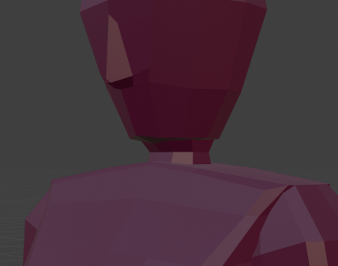

For this turnaround task, I drew the character sort of how one would model it. As in that I started with a more block like shape for each
main piece and whittled it down to what I felt was adequate. For example, I started with making the body just two trapezoids and the legs
as rectangles, then smoothed the lines and made it more proportional. After that I added accessories and other details.
Testing
When I reviewed my design, I felt the knees of both the front and side profile weren’t very well drawn. and where I wanted the hands to
lie. I considered having them together at the front or back to show politeness, but chose not to in favor of ease for future modeling.
When drawing, I was conflicted on whether I was making it not feminine enough or if I had made it too overtly feminine, but was too close
to it to tell either way.
Feedback
Do you think the body is disproportionate, if so, why?
“Try making the back more slouched in the side profile, it seems a bit too stiff. Most people don’t try to keep a super
straight posture all the time, so it should poke out more.”
“You should make the neck longer, it looks like they’re slouching, and make the side profile’s leg wider.”
Is it ‘too’ feminine in a way?
“I mean, I think it’s clearly a girl but I don’t know if it’s too feminine, you could try evening out the figure.”
“It’s fine in my opinion, maybe the front could be a bit more curved, less blocky.”
Improvements
I took the advice my friends had given me and reworked many features of the design. The main one being the clothes of the character, which
in turn help show the figure of it (mainly in the arms/sleeves). Other than the clothes, the heads were changed slightly, the thighs were
made a bit smaller on the front profile and opposite for the side profile, and the legs in general were reshaped. The shoes were changed,
and hair was added simply to show where it would be.
While I do think this is much better, there are still some improvements that could be done. Most obvious are the shoes in the front profile
and the posture of the side profile(see right image for better posture). Along with the legs of the front profile, and the side profile to
a lesser extent, which should be wider than they are.
Task 2 - Head
Development
The modeling of this head took a deceptively long time. I had to completely restart a couple times to get it as best as I could. I tried
making custom knife cuts and dissolving vertices, scaling things up and down trying to make it fit. But somehow the most simple solution
of making 3 vertical and horizontal loop cuts, shaping it to the side profile of the head, and then moving each round of vertices towards
the midline where it mirrors. Afterwards I tapered the bottom of the head to make it look more realistic, and went in and moved things
around, scaled it up and down, and eventually landed on this.
Testing
After looking at the head I felt like there was something wrong with it, like the shape wasn’t a head shape, but I couldn’t figure out how
to fix it. Along with that I wasn’t sure if the neck looked right, whether it was too thin or too long or something.
Feedback
Does it look like a human head?
“I think it does, but you could try making the bottom of the head thinner.”
“You should add a nose, it looks weird without one.”
Should the neck be changed somehow?
“Maybe make it wider, it seems a bit too thin.”
“Necks don’t get that much thinner as they go toward the head, usually they’re pretty rectangular with a slightly thinner midpoint.”
Improvements
I am very thankful that my colleagues recommended me to make a nose, as I really did want one but was simply too fearsome of it looking
terrible and/or being a complete waste of time. And while I usually don't mind trial and error, I was too tired to endure another round
of redoing the head.
The neck change, however subtle, I think did make a good difference. Looking back at the original neck, it looks more like a head of
broccoli than of a person.

Task 3 - Idle animation
Development
As I created the initial idle animation that the instructions introduced(see video below) I couldn't help but feel like there was something
I didn't like about it. I quickly realized that I just didn't feel like it was very unique, bobbing up and down doesn't really show any
personality either. So I decided to make a second one with a little bit more charcter.
Testing
After I had finished all of the given tasks, I was looking over them and started to not like the idle animation, as I've said above. After
realizing this I knew I wanted to create another one, and I'm glad I did. I knew I wanted the animation to portray a kind of sweet feeling,
the kind of person who always smiles and helps you out.
Feedback
One piece of feedback I recieved was to add more bending to the knee, which would consequently also cause more hip movement, luckily
enough I was considering to do this.
I was also advised to animate more movement to the arms during the swaying, as it would give a more natural feel to the movement and
be less robotic and/or stiff.
Improvements
The improvements made to the charcter's idle animation made a noticeable difference in how it conveys the personality of said charcter, and
also it a very unique idle animation rather than the old timey cartoon character feeling animation. And this was actually fun to make, it
wasn't work in the derogatory sense, it was actually interesting to make.